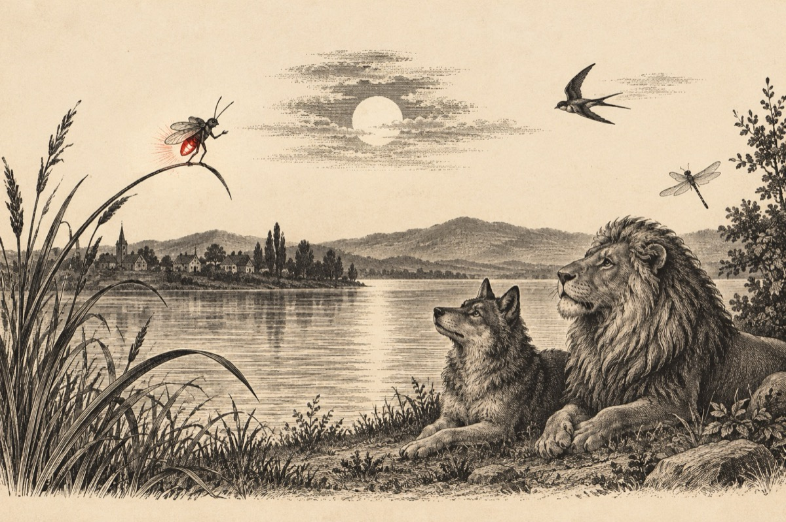

Licuriciul orator
Lupul, leul și lăstunul
S-au încrucișat cu drumul
Într-o seară-n lună plină
În a lacului lumină
Și-alte vietăți, mai mici,
Însoțiți de-o libelulă
Luminați de-un licurici
Hotărât și plin de patos,
Pentru a le ține-un logos.
Fraților, nu vă spun glume,
Vânătorii sunt pe urme,
Lupul va fi vai de el -
I se paște un măcel
Pentru-al vinde în orașe
Sub formă de gulerașe,
Cismulițe, portmonee,
Iară colții în muzee
Leul vai de el sărmanul
Îl vor prinde cu arcanul
Și din cogeamitea rege,
Pentru circ îl vor alege
Unde îl vor ține-n cușcă
Și-l vor bate dacă mușcă...
Lăstunul și libelula
Cu nimic nu se compară
De li-i frig, sau foame-ntr-una
Ei tot timpul zboară
Pe luceferii din apă
Nu îi lasă să dispară.
Numai dacă-i nor afară...
Iară eu ca licurici
Ziua nu mă știu în fapte,
Iar de-i noapte-s scăpărici
Vasile Groza
Apare și în: Copile sau Cartea copiilor, Poezii cu animale.